秋天保养的重点是润肺阴、保肝胆。
秋天气候干燥，要润肺滋阴，避免产生呼吸道的问题。肺和大肠是一个系统，肺滋润了，肠道才能畅通。肺管皮肤，要想皮肤在秋冬保持水分，就要先润肺。
秋吃酸，护肝胆。
大多数树木都是在秋天结果子，而且秋天成熟的果实和种子往往都带有酸味或涩味。这些应季的果实正适合秋天用来调养肝胆。
酸味入肝胆，能促进肝血和胆汁的生成。酸味入肝，能补肝血，平息肝火；酸味入胆，能促进胆汁分泌，可以解油腻、降血脂。
酸味有收敛作用，能助人体储存营养，保护精气不外泄，为即将到来的冬天做准备。
- 跟着陈老师顺时养生，把我半年不好的过敏脸治好了。最喜欢的姜枣茶，祛寒湿一流；酸梅汤滋阴补血，小孩子也好喜欢喝。最神奇的是泡花生，干燥的秋冬季节必备，懒人必备，吃完皮肤再也不干了，强力推荐！
——雪咖啡
- 今年秋分前后，发现自己洗头发时掉发掉得厉害，而且眼睛干涩得难受，人也很乏力，刚好看到老师的一些秋天养生的专栏，说这种现象是肝血不足导致的，要多喝桂花枸杞茶和补气血的双莲墨鱼汤。这段时间我用甘草陈皮梅子汤方，自己加上黄芪，早上煮水喝，白天在办公室泡桂子暖香茶，晚上经常煮银耳汤、双莲墨鱼汤来吃，一个星期后眼睛没那么难受了，人也精神多了。希望坚持这些饮食，好好补下气血，把脱发的症状也改善。感恩遇到陈老师，希望博大精深的中医养生能让更多的人受益。
——小佳
秋季全家增强抗病力小茶方：山楂甘草茶
生山楂和甘草在药店和一些超市都能买到。记住生山楂是中药名称，它其实是干的山楂，不是新鲜的山楂，新鲜的山楂泡茶不太容易泡。
山楂甘草茶
【原料】
干山楂300克、甘草60克。
【做法】
- 把山楂和甘草分成10份，放入10个茶包袋中。
- 每次取1袋放入随身杯，用沸水冲泡，闷20分钟后饮用，可以反复冲泡。
【功效】
- 清咽、利嗓。秋冬季常喝可以增强抵抗力。
- 活血、化瘀，淡化黄褐斑。
- 常喝可以改善血液黏稠度，软化血管。
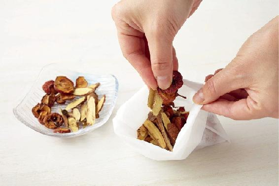
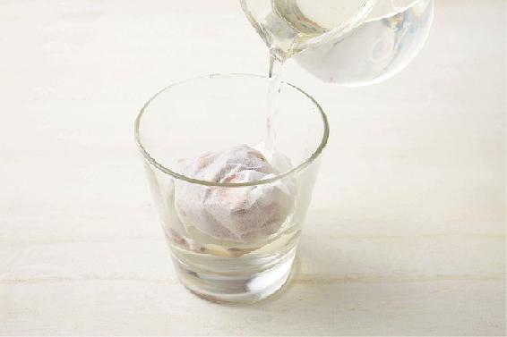
允斌叮嘱
- 我青春期老长痘，六年前喝玫瑰花水调理好的，痘印是喝老师说的山楂甘草茶祛除的，估计是气血调理好了就不再长了。
——纳英
- 从秋天到现在我们一家再没买过感冒药，家里有人不舒服了，就按老师的方子来，一两次也就差不多了。
——8群读者
- 山楂甘草茶真是个好东西，每次吃多积食了，喝一次就管用，喝了后感觉胃里很舒服，马上就有通的感觉。
——明天更美好
- 喝了一段时间山楂甘草茶，感觉还能抗流感，身体抵抗力都增强了！
——海燕
- 山楂甘草茶活血化瘀的功效超级好，我喝了半个月，当月例假一点血块都没有了，真是神奇，月经量也增多了呢，超开心。谢谢陈老师。
——滴滴答答
- 老公有高血压，山楂甘草茶会作为辅助降压茶饮泡来喝。有时我怕血脂高，也会泡着喝。
——Mahdⅰs小公主
- 每次例假前喝几天，例假准时到来，腰不酸，肚子也不疼！
——冉冉妈妈
- 喝过，消胃胀。
——北燕
- 喝了山楂甘草茶，小腹很平，经期前乳房不胀痛，经期很顺畅。
——平淡是真
- 我和孩子喝了老师的山楂甘草茶，不光胃里不热、不满了，感冒也明显减少。
——辽阔
- 这个小心吃，脾虚、气虚都少喝，理气作用很强。脸上有斑时才喝。
——艺萍
防秋燥引起咽喉干痛小茶方：双皮润喉饮
双皮润喉饮
【原料】
新鲜梨皮、新鲜西瓜外皮适量，蜂蜜适量。
【做法】
- 西瓜、梨用加面粉的清水泡10分钟，清洗干净后再削皮。
- 把西瓜皮和梨皮切成小块，放入随身杯，沸水冲泡，闷30分钟后，调入蜂蜜饮用，可以反复冲泡。
【功效】
清凉润喉，清热利咽，防治咽喉疼痛。
人民教师一名，一到春夏人就犯困，嗓子也难受，慢性咽炎没法根治。幸好有老师的双皮润喉饮，喝下去当时嗓子就不那么难受了。连续喝几天，嗓子眼那种火辣辣的感觉就没有了，声音也不嘶哑了，讲课也不痛苦了。
——眺高
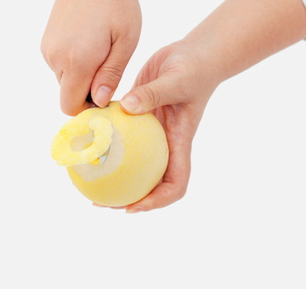
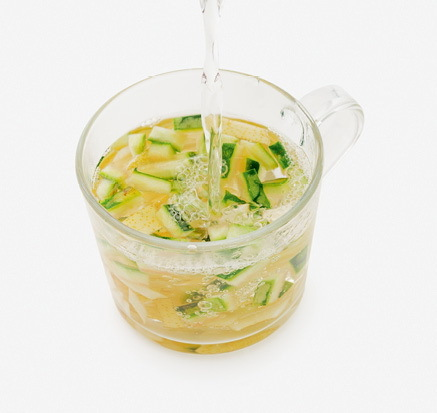
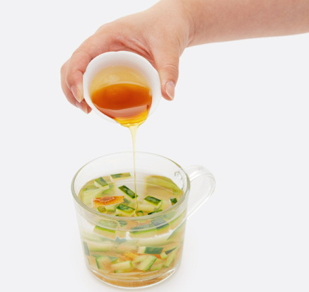
秋季全家养肝小茶方，让眼睛亮晶晶，喝桂子暖香茶
秋天的第三个月，除了要继续秋季养肺滋阴的主题外，还要特别注意养肝血。
肝血虚，人就会眼睛总是干涩，视力减退，指甲变薄，手脚发麻，甚至腿脚有时会不由自主地抽动，女性经量少甚至闭经……这都是肝血不足的表现。秋天桂花飘香的时候，最适合给自己和家人泡一杯桂子暖香茶，既应景又养生。
桂花可以养肝，提升脾胃的功能，还可以养肺，预防秋冬季咳喘，加入枸杞子，更增强补肝血的作用。
一般人以为枸杞子是补肾的，其实它肝肾都补。枸杞子是食物，用量不必精确到克。每次抓一把来冲泡就可以了。泡过的枸杞子，还可以吃掉，效果更好。
桂子暖香茶
【原料】
干桂花3克（新鲜的可以5克左右）、枸杞子适量。
【做法】
沸水冲泡代茶饮。
【功效】
- 预防肝血虚。
- 常饮能使眼睛更明亮。
- 桂花和枸杞子都有通便的作用，腹泻时暂时停饮。
- 桂花可以用干品，也可以用新鲜采摘的。
- 桂花干后颜色会发黑，这是自然现象。如果买来的干桂花颜色金黄，而且久存不坏，很可能用过硫或其他保色剂，不要饮用。
读者评论
- 眼睛干涩，喝枸杞桂花茶，睡一觉就好了。
——汤汤
- 老师的方子特别棒，前几天眼睛干涩得很，简直可以用睁不开眼睛形容了。今天喝了两杯桂花枸杞茶，眼睛立马不干了。
——Mina
- 老师的食方确实好用，去年冬喝了桂子暖香茶，冬天没那么怕冷了。
——随缘
- 我之前血海穴那里被撞了一下，里面有一个小鼓包，一大片瘀血，后来瘀血散得很慢，小鼓包一直没有消。然后我喝了一阵子桂子暖香茶，还有核桃水，今天我发现小鼓包消失了，并且以前大姨妈量少，现在正常了！
——12群读者
- 经常喝枸杞桂圆茶，手脚不再冰凉，一直暖暖的，很舒服，堪称“冬季棉袄茶”。
——兠里侑鎕
- 晚上睡眠浅时就会喝桂子暖香茶，挺好的。
——麻春敏
秋季女性调经养颜小茶方：桂花红糖茶
女性喝桂花茶，有调经通经的功效。
桂花红糖茶
【原料】
桂花3克（干品）或6克（鲜品）、红糖适量。
【做法】
把桂花、红糖放入随身杯，沸水冲泡，闷10分钟后饮用，可以反复冲泡。
【功效】
- 调理月经不畅。
- 舒肝气，散寒气，通瘀，帮助女性预防面部色斑，还能调理月经。
- 冬季寒冷，例假前会泡桂花红糖茶喝，心情愉悦，经期轻松。
——Mahdⅰs小公主
- 说起桂花，是我的最爱之一，很清香，胃不舒服的时候喝上一杯，瞬间能缓解不少！
——海燕
秋冬季给孩子喝的消积食饮料：三红消食饮
三红消食饮不仅可以兑水当饮料，也可以当果酱直接吃。酸酸甜甜的口味，孩子们都很喜欢。
三红消食饮
【原料】
新鲜山楂1 000克、新鲜胡萝卜1 000克、红糖150克。
【做法】
- 首先为容器消毒：取一个干净的玻璃瓶，放入锅中加清水煮至水沸5分钟后，捞出来，晾干水分备用。
- 新鲜山楂洗干净，锅内加清水烧开后，把山楂放进去煮两三分钟，待山楂外皮煮破就起锅。捞出来去掉蒂和核，放到榨汁机中加一点清水打成果泥。
- 新鲜胡萝卜洗干净，切成小丁，放入开水锅中煮软，同样捞起来放到榨汁机中加一点清水打成果泥。
- 把山楂泥和胡萝卜泥混在一起，加150克红糖，放一点水，下锅大火烧开，然后转小火熬，要不断搅拌，避免煳锅。等水收得差不多时关火。
- 待胡萝卜、山楂果酱晾凉后，用瓶子密封起来，放到冰箱里冷藏，可以存放1个月。用的时候放入随身杯，用温水稀释1～2倍就可以喝了。
【功效】
- 改善脾胃功能。
- 健胃，养肝，消食，适合饱食后饮用。
- 预防腹部肥胖。
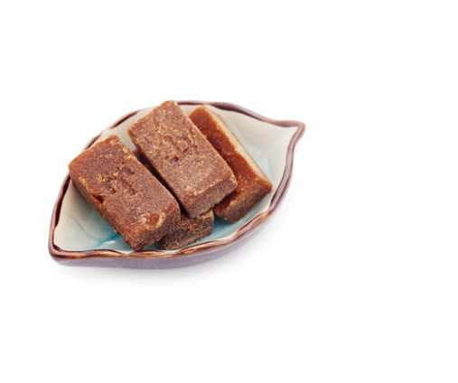
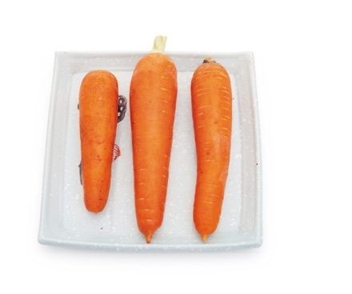
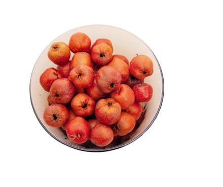
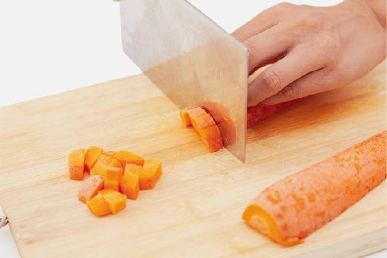
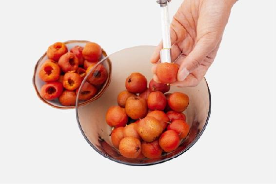
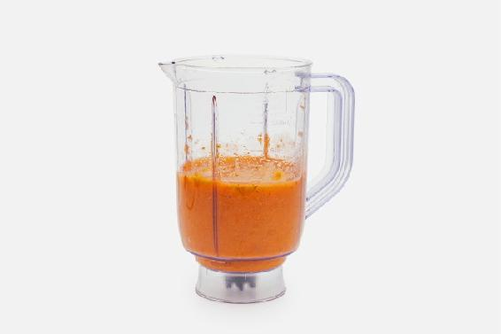
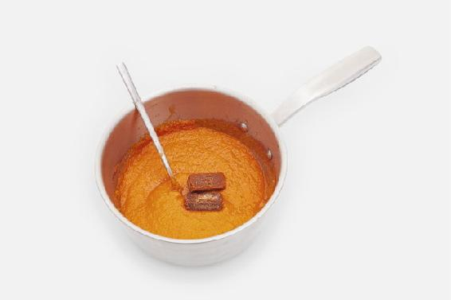
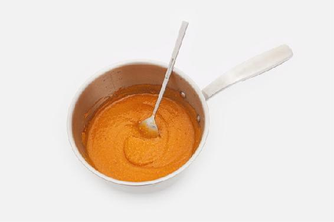
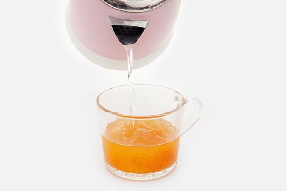
孕妇，胃酸过多的人，胃溃疡、十二指肠溃疡患者不宜吃山楂。
- 按照书中的制作方法做了，就是觉得蛮酸的，红糖也会多放一些。这个消食的方法，效果非常明显和迅速。
——Donna
- 新鲜山楂上市的时候做了一大罐。有天晚上，父亲说感觉吃多了胃里不舒服，家里的大山楂丸又吃完了。我把做好的三红消食饮拿出来，打算给他冲水喝。父亲直接尝了一下，说有吃果丹皮的感觉，吃了几勺，临睡前说胃里感觉舒服了。
——一丹